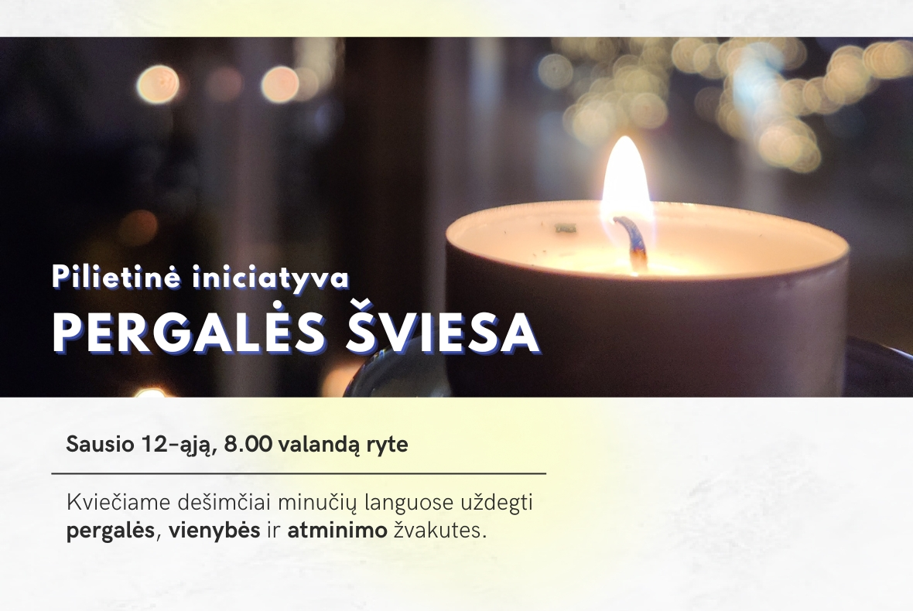

Sausio 13-ąją prisiminti

Prisiminkime 1991 metų Sausio įvykius ir prieš trisdešimt trejus metus pasiektą pilietinę pergalę prieš agresorių. Sausio 12-osios rytą uždekime languose pergalės, vienybės ir atminimo žvakutes.
Iniciatyvą organizuoja Tarptautinė komisija nacių ir sovietinio okupacinių režimų nusikaltimams Lietuvoje įvertinti.
Pagrindinis puslapuis